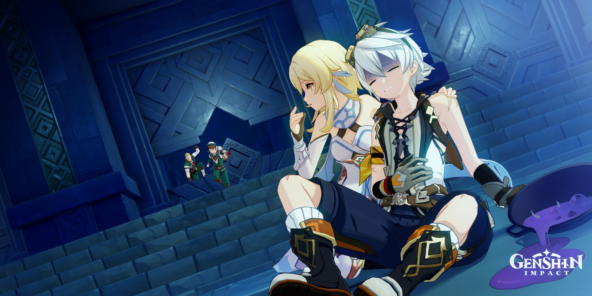

Bennett sonríe con confianza.
—“He activado muchos mecanismos en mi vida. ¡Seguro puedo con este!”
Se acerca al primer interruptor.
Lo activa.
Nada pasa.
Activa el segundo.
Las runas brillan suavemente.
—“¿Ves? Todo bajo control.”
Activa el tercero.
Un pequeño chispazo salta.
Se detiene.
—“…Eso fue normal.”
Respira hondo y activa el último.
Silencio.
Durante un segundo parece que funcionó.
La puerta comienza a abrirse lentamente.
Bennett sonríe ampliamente.
—“¡¿Lo ves?! ¡Lo logré!”
Entonces—
Las runas cambian de color repentinamente.
El mecanismo se desincroniza.
El suelo se abre bajo sus pies.
Logras sujetarlo antes de que caiga completamente.
La puerta se cierra de golpe.
El dominio entra en modo de bloqueo.
No explota.
Pero tampoco se abre.
Bennett se queda mirando el mecanismo apagado.
—“…Casi.”
Baja la mirada.
—“Siempre es así. Cuando creo que lo logré… algo cambia.”
No hay explosión espectacular.
Solo frustración silenciosa.
Deciden retirarse.
Final: “No Es Culpa Tuya”
Estuvieron a punto de lograrlo.
Pero la mala suerte volvió a intervenir.
Bennett se culpa… aunque no debería.
Este es el final más emocional y vulnerable.
